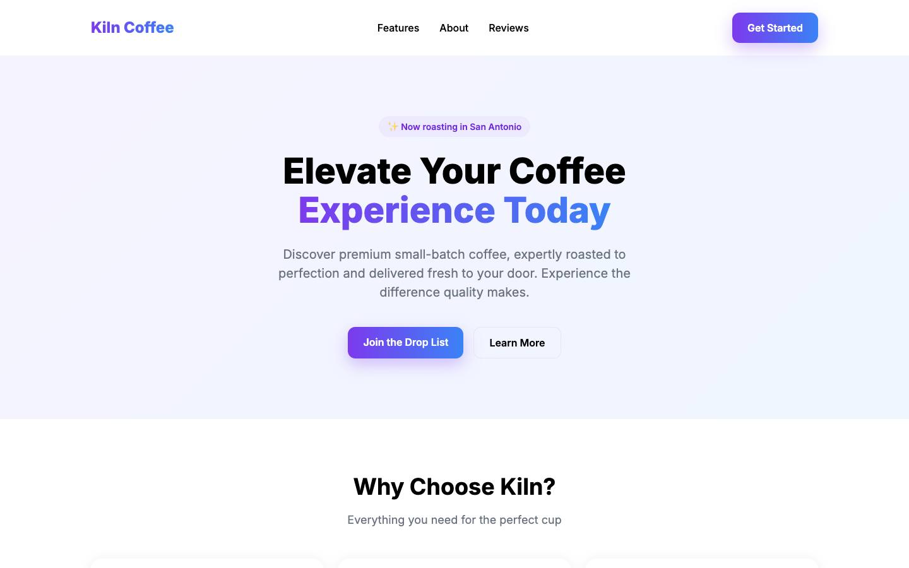
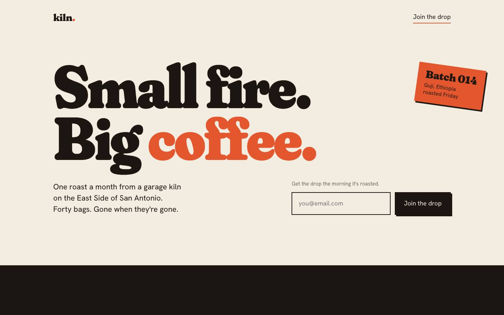

A coding agent, no design system. Every value a default.

Same brief. 4 Awwwards food & drink winners on the wall first.
| Font weights loaded | 5 (Inter 400–800) | 2 (Fraunces 900 · Hanken 400) |
|---|---|---|
| Display ÷ body size | 2.8× | 7.9× |
| Easing curves | 4 | 1 (sampled from a 7.41 SOTD) |
| Page / text | #FFFFFF / #000000 | #F3ECE1 / #1C1612 |
| Actions in first viewport | 3 | 1 |
| At 390px wide | overflows sideways | one clean column |